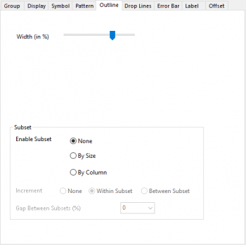
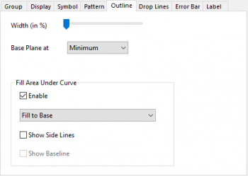

_Outline_Tab/Bp_at_zero.png)
_Outline_Tab/Bp_at_minimum.png)
Registerkarte Umriss für 3D-Balken (XYZ) |
Registerkarte Umriss für 3D-XYY-Balken |
|  Registerkarte Umriss für 3D-Bänder |
Registerkarte Umriss für 3D-Wände |
|  Registerkarte Umriss für 3D-Wasserfall |
Legen Sie fest, ob die Form des 3D-Balkendiagramms beibehalten werden soll (d. h. das Seitenverhältnis der Balkenbreite in X- und Z-Richtung für XYY-3D-Balkendiagramm). Bei 3D-XYZ-Balken ist das Kontrollkästchen Form beibehalten standardmäßig aktiviert. Bei 3D-XYY-Balken ist das Kontrollkästchen Form beibehalten standardmäßig deaktiviert.
Wenn das Kontrollkästchen Form beibehalten aktiviert ist, wird der Schieber Breite (in %) angezeigt. Wenn das Kontrollkästchen Form beibehalten deaktiviert ist, werden die Schieber Balkenbreite (in %) in X-Richtung und Balkenbreite (in %) in Y-Richtung für 3D-XYZ-Balken angezeigt. Die Schieber Balkenbreite (in %) in X-Richtung and Balkenbreite (in %) in Z-Richtung werden dagegen für 3D-XYY-Balken angezeigt.
Diese Schieber werden verwendet, um die Breite der Balken in X-/Y-/Z-Richtung auf einer Skala von 0 bis 100 zu steuern. Dieser Wert ist ein Prozent der Balkenbreite.
100 bedeutet, es gibt keinen Abstand zwischen den Balken in dieser Richtung.
0 bedeutet, der Balken wird als eine Ebene in dieser Richtung angezeigt.
Wenn Versatz innerhalb Untergruppe (Registerkarte Gruppe) für Kumulativ/Inkrementell aktiviert ist und die Untergruppierung eingerichtet wurde, können Sie den Abstand zwischen den Untergruppen anpassen.
Abstand zwischen Untergruppen + Abstand zwischen Balken = 1 - Balkenbreite in Y-Richtung
Das heißt,
Abstand zwischen Untergruppen = (1 - Balkenbreite in Y-Richtung)/n*100 %, n ist die Anzahl der Untergruppen.
Wenn der Abstand zwischen Untergruppen 0 ist, dann werden die Balken zwischen den Untergruppen nebeneinander ohne Abstand gezeigt. Wenn der Abstand zwischen Untergruppen 100 ist, ist der Abstand zwischen den Untergruppen gleich dem Abstand zwischen den Balken.
Bei den 3D-XYZ-Balkendiagrammen macht das Aktivieren von Form beibehalten dieses Kontrollkästchen verfügbar. Passen Sie die Balkenbreite in beide Richtungen, X und Y, an.
Passen Sie bei 3D-XYY-Diagrammen (3D-Wand/3D-Wasserfall/3D-Bänder) die Wand-/Bandbreite in Z-Richtung an. Bei 3D-Wasserfalldiagrammen ist die Breite per Standard auf 0 gesetzt.
Hinweis: In den folgenden Diagrammen ist die Z-Skala auf Von = 3,6 und Bis = -3,6 gesetzt.
|
|
|
|
Verwandte Systemvariable: @LRBM
Aktivieren Sie dieses Kontrollkästchen, um eine Zahl zwischen 0 und 100 einzugeben, und verschieben Sie die Basisebene entlang der Z-Ebene.
Wie beim 2D-Balkendiagramm können Sie auch hier die Datenpunkte in einer Zeichnung als mehrere Teildatensätze gruppieren.
Wählen Sie das Kontrollkästchen Aktivieren, um die Fläche unter den Wasserfallkurven zu füllen.
Hinweis: In einem Wasserfalldiagramm gibt es mehrere Zeichnungen in der gleichen Gruppe. Für die 2. Zeichnung oder Zeichnungen danach wird ein weiteres Kontrollkästchen 1. Zeichnung in der Gruppe folgen gezeigt und standardmäßig aktiviert, um die Einstellung der Füllfläche für alle Zeichnungen in der gleichen Gruppe beizubehalten.
Weitere Einzelheiten zur Füllfläche unter der Kurve können Sie im Abschnitt zum Bedienelement Füllfläche unter der Kurve auf der Registerkarte Linie für 2D-Liniendiagramme nachlesen.